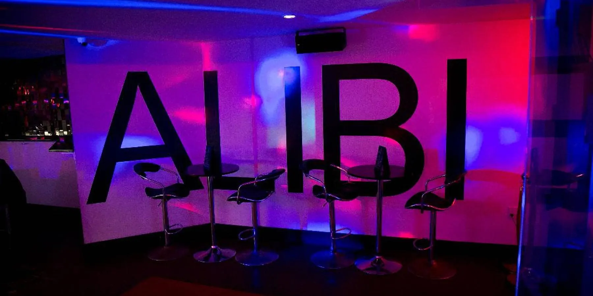
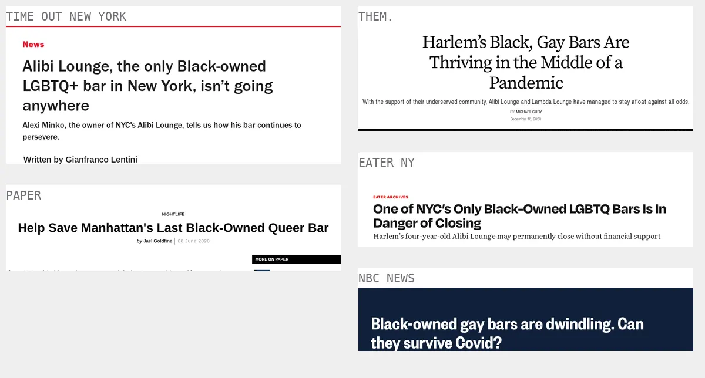
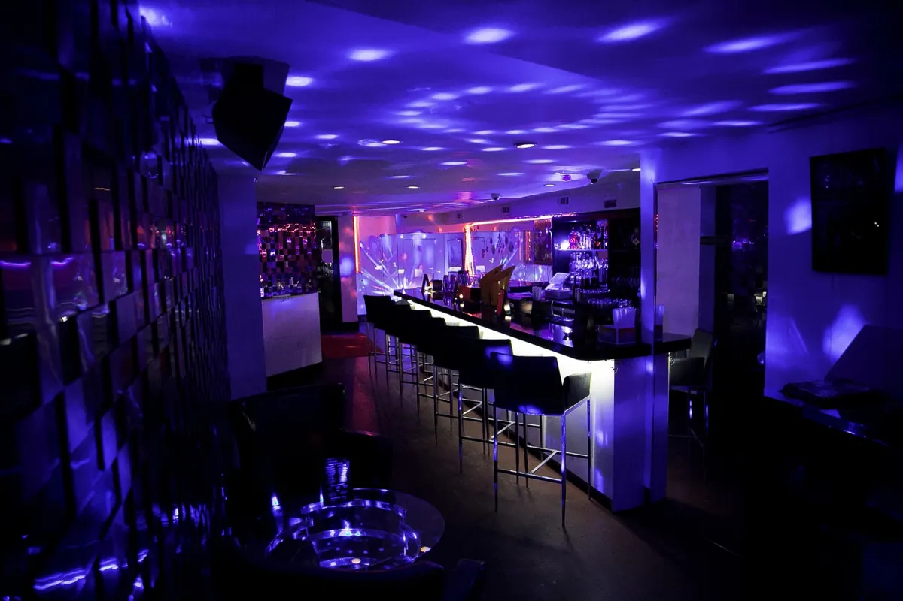
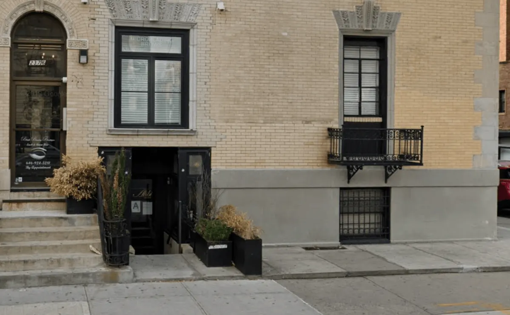

alibi
Raised $500K in six months to keep Harlem's last Black-owned gay bar open.
- Role
- Community Campaign Director
- Place
- New York, NY
- Dates
- 2020
- Disciplines
- Campaign strategy, Fundraising, Brand partnerships, Live events, Volunteer management

The brief
Alibi Lounge is Harlem's last Black-owned gay bar, and in 2020 I designed and ran the community campaign to keep it open.
The campaign ran through digital programming, live fundraising events and partnerships with Macy's, Columbia University and Tito's Vodka.
What I did
Campaign design
Designed and ran the community campaign, including the digital programming.
Live events
Ran live fundraising events, with thousands of independent donors giving over six months.
Brand partnerships
Built partnerships with Macy's, Columbia University and Tito's Vodka.
Volunteer team
Recruited and managed a rotating team of 3 to 8 volunteers every week.
Results
- $500K
- raised in six months
- 14
- press articles
- 3
- brand partners



Earned press
- The New York TimesNew York's Gay Bars Fear They Won't Survive the PandemicJun 20, 2020
- BloombergFor Black-Owned Gay Bar in Manhattan, an Uncertain Road AheadJun 29, 2020
- NBC NewsBlack-owned gay bars are dwindling. Can they survive Covid?Sep 27, 2020
- Time Out New YorkAlibi Lounge, the only Black-Owned LGBTQ+ bar in New York, isn't going anywhereJun 25, 2020
- Eater NYOne of NYC's Only Black-Owned LGBTQ Bars Is In Danger of ClosingJun 8, 2020
- them.Harlem's Black, Gay Bars Are Thriving in the Middle of a PandemicDec 18, 2020
- PAPERHelp Save Manhattan's Last Black-Owned Queer BarJun 8, 2020